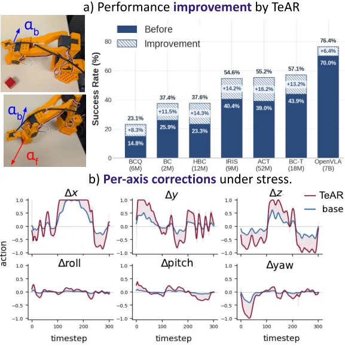
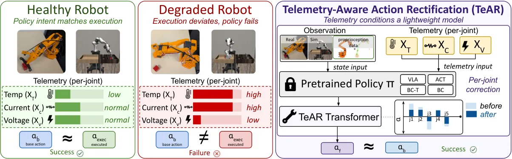
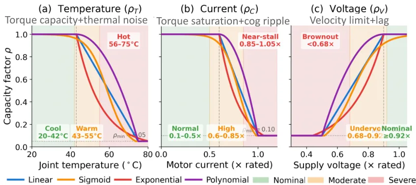
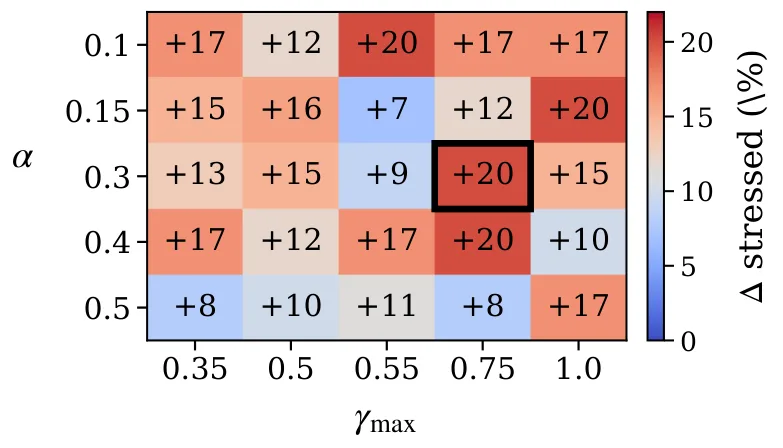
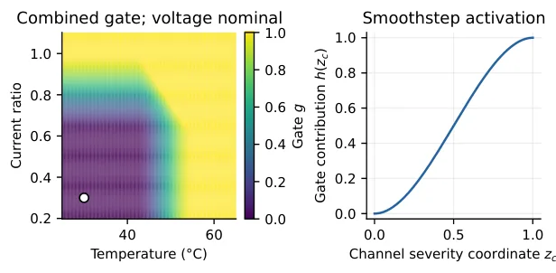

TeAR：执行器退化下的操作策略测试时自适应
Test-Time Adaptation of Manipulation Policies Under Actuator Degradation
把温度/电流/电压遥测变成动作校正的条件输入：轻量 Transformer 输出有界增益与残差，标称区间内由结构保证精确恒等；7 个受压条件平均增益 +18.3±2.9 pt（MRAC/L1 +15.5），真机 SO-101 加热条件下成功率 75%→85%、70%→85%。
mean stressed gain
sim-to-real
mismatch
作者、单位与技术谱系 · Research context
作者与单位
研究脉络
- robosuite / robomimic 仿真栈与 OSC 控制接口方法基座关系：全部仿真实验在 robosuite 的五个操作任务与 robomimic 的策略族上进行，动作空间是 Khatib 的 operational-space control（d_a=7）[论文 Experiments 与 Degradation Model 正文]
- 域随机化与自适应控制基线（Domain Randomization、RMA、ACDR、MRAC/L1）上游工作关系：作为对照族出现，用来检验“遥测条件校正”相对既有鲁棒训练与自适应控制的增益[论文 RQ2 基线表]
- SO-ARM101（低成本开源机械臂）上游工作关系：真机验证平台，五自由度臂上执行 Lift 任务；基础策略与适配器均在仿真训练后直接部署[论文 RQ5 与附录 SO-101 硬件一节]
- 遥测条件的动作校正（TeAR）本篇推进关系：把原本只用于日志与安全的三路执行器遥测变成动作校正的条件输入，并用门控结构保证标称零副作用[论文摘要与 Introduction 正文]
合作网络
- Som Sagar ↔ Ransalu Senanayake（同单位共同署名）Som Sagar → Ransalu Senanayake关系：共同署名（同一论文、同一学院）[arXiv abs 页面（作者块）]
- TeAR 与 robosuite/robomimic 仿真栈的技术依赖TeAR 评测流程 → robosuite / robomimic（含 ACT、VLA、离线 RL 等策略族）关系：明确技术依赖：全部仿真评测建立在该开源仿真与策略库之上[论文 Experiments（RQ1 与基线）正文]
作者与单位来自论文作者块；脉络条目按“方法基座 / 上游工作 / 本篇推进”组织，其中基线方法名称与数值取自论文自身的对照表。被引文献（如 robosuite、MRAC/L1、RMA 等）的完整条目在本次取得的 LaTeX 源中未附带 .bbl，故未逐条核对其出版信息。论文未披露任何师生或资助关系。
方法本质拆解 · What actually changed
是不是微调？
不是对策略的微调：基础策略全程冻结，训练对象只有一个约轻量级的适配器 Transformer，用监督方式回归“近似容量逆”的目标动作。训练数据来自既有示范动作的遥测增强——每个示范步按四档严重度各采样一条遥测并算出对应目标，用 L1 损失（另加 3 倍干净样本恒等惩罚）训练 30,000 步，AdamW、初始学习率 5×10⁻⁴、batch 256、梯度裁剪 1.0、学习率余弦退火到 0；论文明确不收集适配器的 on-policy rollout。
有没有额外约束？
约束都作用在动作变量上：门控 g_j 把修正限制在带内为零、带外最多为 1；增益偏离被 γ_max 限制、残差被 α 限制，二者都经 tanh 有界，因此修正量满足 |a_f,j - a_b,j| ≤ g_j(γ_max|a_b,j| + α)，最后由 clip 限制在 [-1,1]。标称带由各通道阈值与过渡宽度定义（温度门从 42 到 55 °C、电流 0.60–1.00、电压 0.90–0.50），标称带内 g_j=0 从而精确恒等。退化侧另有约束：容量因子下限 0.05、电流与电压为归一化量而非物理单位、平移与旋转按两个重叠关节组分别聚合 q_p 与 q_r。
推理/后端到底做了什么？
推理只多了一次适配器前向：冻结策略先给出动作 a_b，适配器读取机器人状态与三路遥测，计算门控与增益/残差后输出 a_f，再交给低层控制器（OSC 接口，d_a=7：三平移、三旋转、一夹爪）。没有在线优化、没有梯度更新、没有额外规划或回放，也不需要改策略内部结构；论文强调部署时适配器的动作输入从“示范动作”换成“策略拟议动作”，其余机制不变。
方法本质是什么？
本质是把“执行器剩余能力”当作一个由遥测近似可观测的量，并用一个有界的修正把指令动作预先放大或衰减，从而补偿容量损失；解耦之处在于“何时介入”（门控，由遥测严重度决定）与“介入多少”（学到的增益/残差，由状态、动作与遥测共同决定）被分开设计，于是标称条件的零副作用由结构保证。它没有做的是：不估计真实的容量或不确定性、不建模执行器的物理动力学、不保证闭环稳定或安全，也不在部署时使用真实容量（TeAR 与假定模型逆补偿都只能依赖先验）。
输入=冻结策略的拟议动作 + 机器人状态 + 关节温度/电流/电压遥测；改变的位置=动作在到达低层控制器之前的数值（增益 γ_j 与残差 δ_j），基础策略权重不动；动作=门控判定是否介入 + 有界乘性/加性校正 + 四档严重度监督训练；直接效果=7 个受压条件平均 +18.3 pt（对照 MRAC/L1 为 +15.5 pt），失配场景 25.6%→31.8%，真机加热 75%/70%→85%，标称条件下严格保持原动作。

桥接价值Bridge
桥接价值
TeAR 的接口设计值得直接借用：它在策略与低层控制器之间插入一个只做“有界校正”的适配器，并用结构（而非数据）保证遥测落在标称区间时输出与原动作逐位相同。对做组合导航的我们，这正对应“退化时才介入、介入量有明确上界、标称时零副作用”的修正模块设计契约；论文还给出显式界 |a_f - a_b| ≤ g_j(γ_max|a_b| + α)，把“能改多少”写成了可审计的公式。第二点是它的评测协议：在 8 条不同族（线性/指数/sigmoid/多项式）的退化曲线上测试，其中包含训练模型里没有的非线性通道，并用 95% 曲线 bootstrap 区间报告增益——这套“先验失配 + 区间含 0 就如实说”的做法可以直接用于我们评估依赖先验模型的模块。
方法与模块Method
方法摘要
框架把部署期退化写成一个遥测条件的动作扰动：对每个关节的归一化温度、电流、电压分别算容量因子 ρ_c ∈ (0,1]，按平移与旋转两个重叠关节组做几何平均得到 q_p、q_r，再依次施加温度噪声、电流纹波与电压扰动。TeAR 本体是一个轻量 Transformer（3 层编码器、d_model=128、4 头注意力、FF 宽 256），把每个动作分量与同索引的遥测组成 4 维 token（外加 1 个机器人状态 token），经自注意力后由两个零初始化输出头给出 logits，再经遥测门控 g_j 得到增益 γ_j = 1 + g_j γ_max tanh(u_j) 与残差 δ_j = g_j α tanh(v_j)，最终 a_f,j = clip(γ_j a_b,j + δ_j, -1, 1)。门控由三通道归一化严重度的 smoothstep 求和取 min(1,·) 得到，标称带内 g_j = 0。训练用退化模型的逐索引近似逆构造目标 a* = clip(a_d ⊘ max(ρ, 0.05), -1, 1)，按 clean/mild/moderate/severe 四档课程为每个示范步生成 4 条样本，损失为 L1 加 3 倍干净样本恒等误差，AdamW、lr 5e-4、30k 步，部署时 α=0.30、γ_max=0.75（训练时用 0.50），全程不更新基础策略。
可迁移模块
第一，“结构性恒等 + 有界修正”的适配器接口：门控、增益上界与残差上界三者一起把修正限制在可证明的范围内，且标称条件下恒等不依赖学到的权重，这种设计可以直接搬到我们输出的修正/门控模块上，先保证“不退化时绝不动”。第二，严重度分层课程：不跑 on-policy rollout，只对既有示范动作做遥测增强即可合成四档训练样本，这是很便宜的退化数据构造法，我们在数据有限时同样适用。第三，失配评测协议：多族曲线混合 + 配对比较 + bootstrap 区间，能区分“均值上看好”与“统计上站得住”，值得作为我们报告先验敏感性的模板。第四，它明确区分“动作层恒等”与“闭环稳定性/安全性”，提醒我们不要把零副作用保证误当成性能保证。

证据Evidence
关键证据与数字
规模与主结果：18 个策略-任务对、8 个策略族、5 个 robosuite 任务，在 7 个受压条件下每一对都有正的平均增益，最大单点增益 44.8%（GR00T–Lift）；但并非通道一致恢复——BC–Lift 在加热下从 40% 升到 65%，在电压应力下却从 45% 降到 40%；标称遥测下所有对都保持原成功率。对照（BC-Transformer，7 条件平均 Δ）：TeAR +18.3±2.9 pt，MRAC/L1 实现 +15.5±5.3 pt（且使用了特权 command-response 反馈），No-Telemetry SFT −6.9±3.4 pt，Domain Randomization 0.0、ACDR +1.0、RMA-style −4.3、BC 微调 0.0。适配器结构对照：TeAR 平均 +18.3 pt，交叉注意力 +6.0 pt；在温-流组合压下 TeAR 55.0% 而其他适配器最高 13.3%。训练配方（架构固定）：四档 SFT +17.9% 优于单档 10.7%、SFT+PPO 17.1%、KL-PPO 15.2%、加倍 SFT 14.3%。失配评测（每方法每对 480 条受压 episode）：TeAR 由 25.6% 提到 31.8%，假定模型逆补偿 30.6%（在 Can 与 IRIS–Square 上反而回退），DR-TeAR（64 条随机曲线训练）28.7%；配对增益相对基础策略与假定逆补偿分别为 6.2 与 1.2 pt，95% 曲线 bootstrap 区间 [−0.1, 11.2] 与 [−3.3, 6.1]（均含 0）。真机（SO-ARM101 五自由度臂，每条件 20 次试验）：cool（<45 °C）双方 100%；肩部 >50 °C 75%→85%（+10，即 15/20→17/20）；肩+腕 >50 °C 70%→85%（+15，即 14/20→17/20）。消融：去掉 state token 受压平均 34.8%→27.1%；gate 换 linear −13.3 pt、smoothstep 保持形状 −15.0 pt；只用残差 31.7%、只用增益 36.0%；MLP backbone 反而在“全部受压平均”上更高（41.0% vs 34.8%）。
边界与下一步Limits & Next Step
边界与风险
作者明确承认的限制有四处：一是遥测-容量曲线是可控仿真条件，不是某型机器人的标定模型；二是结构恒等只针对“标称遥测下的动作透传”，不构成闭环稳定性或安全性保证；三是真机只测了热应力（电流与电压应力仅在仿真），且只有 1 个任务、每条件 20 次试验，统计力有限；四是失配评测的增益区间包含 0，因此作者自己写明“提示了跨响应模型的迁移，但未建立确凿的总体优势”。另外消融显示 MLP backbone 在全受压平均上高于完整 TeAR（41.0% vs 34.8%），说明“Transformer + 门控”的优势依赖于具体压力条件而非普遍成立。待核验：真实电流/电压退化下的实机表现、多任务与长时运行、以及门控阈值（42–55 °C、电流 0.60–1.00、电压 0.90–0.50）在其他平台的适用性都未验证；论文也未给出失败案例分布。
下一步实验
第一，把“标称零副作用 + 有界修正”落实为接口契约：在一段标称序列上验证修正模块的输出逐比特不变（对应它们的 60 条配对 episode 恒等检查），再逐步注入退化，记录增益随退化强度的曲线。第二，借用它们的曲线族失配协议评估我们依赖先验的模块（例如大气/电离层改正或噪声先验），报告含 0 的置信区间而不是只报均值，避免把不显著的均值当作结论。第三，用严重度分层课程从现有数据合成退化样本，先做零成本的训练数据构造实验，确认可行性后再考虑是否需要 on-policy 数据。第四，照他们的做法把“动作/输出层恒等”与“系统级稳定性”分开验证，避免过度承诺。







